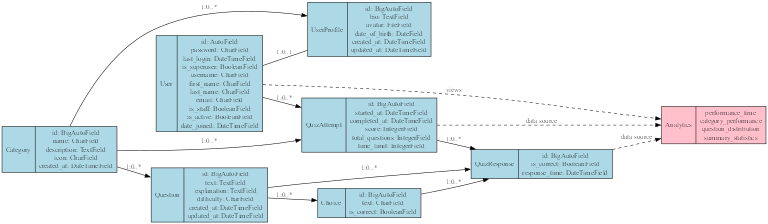

Data Models
This section documents the database models used in the Quiz Game application. These models define the structure of the data stored in the database and the relationships between different entities.
Entity Relationship Diagram
{kind=link}
The diagram above illustrates the relationships between the primary entities in the system.
Category Model
- class Category
Represents a topic or subject area for quizzes.
Categories organize questions into logical groups, allowing users to select quizzes by topics that interest them.
- name: CharField
The name of the category (e.g., “Science”, “History”, “Sports”). Must be unique.
- description: TextField
A detailed description of the category. Optional field.
- icon: CharField
CSS class for the category icon (e.g., ‘fa-science’, ‘fa-history’). Used for visual representation in the UI.
- created_at: DateTimeField
When the category was created. Automatically set when a new category is created.
Question Model
- class Question
Represents a quiz question.
Each question belongs to a category and has multiple choice answers, with one choice marked as correct.
- category: ForeignKey to Category
The category this question belongs to.
- text: TextField
The actual question text.
- explanation: TextField
Explanation of the correct answer, shown after answering. Optional field.
- difficulty: CharField
The difficulty level of the question. Choices: ‘easy’, ‘medium’, ‘hard’. Default: ‘medium’.
- created_at: DateTimeField
When the question was created.
- updated_at: DateTimeField
When the question was last updated.
Choice Model
- class Choice
Represents a possible answer for a quiz question.
Each Choice is linked to a Question, and one Choice per Question should be marked as correct.
- question: ForeignKey to Question
The question this choice belongs to.
- text: CharField
The text of this answer choice.
- is_correct: BooleanField
Whether this choice is the correct answer. Default: False.
- save(*args, **kwargs)
Override of the save method to ensure only one choice per question is marked as correct.
QuizAttempt Model
- class QuizAttempt
Represents a user’s attempt at a quiz.
Records metadata about the quiz attempt, including when it was started, completed, which category was selected, and the overall score.
- user: ForeignKey to User
The user who took the quiz. Can be null for anonymous users.
- category: ForeignKey to Category
The category of questions in this quiz.
- started_at: DateTimeField
When the quiz attempt was started. Default: current time.
- completed_at: DateTimeField
When the quiz attempt was completed. Null if the quiz is not yet complete.
- score: IntegerField
The total score achieved. Default: 0.
- total_questions: IntegerField
The total number of questions in the quiz. Default: 0.
QuizResponse Model
- class QuizResponse
Represents a user’s response to a single question within a quiz attempt.
Tracks which question was asked, which choice was selected, and whether the answer was correct.
- quiz_attempt: ForeignKey to QuizAttempt
The quiz attempt this response belongs to.
- question: ForeignKey to Question
The question that was answered.
- selected_choice: ForeignKey to Choice
The choice that was selected by the user.
- is_correct: BooleanField
Whether this response was correct. Default: False.
- response_time: DateTimeField
When this question was answered. Auto-set when the response is created.
- save(*args, **kwargs)
Override of the save method to automatically set is_correct based on whether the selected choice is correct.
Database Schema
-- Category Table
CREATE TABLE "quiz_app_category" (
"id" integer NOT NULL PRIMARY KEY AUTOINCREMENT,
"name" varchar(100) NOT NULL UNIQUE,
"description" text NOT NULL,
"icon" varchar(50) NOT NULL,
"created_at" datetime NOT NULL
);
-- Question Table
CREATE TABLE "quiz_app_question" (
"id" integer NOT NULL PRIMARY KEY AUTOINCREMENT,
"text" text NOT NULL,
"explanation" text NOT NULL,
"difficulty" varchar(10) NOT NULL,
"created_at" datetime NOT NULL,
"updated_at" datetime NOT NULL,
"category_id" integer NOT NULL REFERENCES "quiz_app_category" ("id") DEFERRABLE INITIALLY DEFERRED
);
-- Choice Table
CREATE TABLE "quiz_app_choice" (
"id" integer NOT NULL PRIMARY KEY AUTOINCREMENT,
"text" varchar(255) NOT NULL,
"is_correct" bool NOT NULL,
"question_id" integer NOT NULL REFERENCES "quiz_app_question" ("id") DEFERRABLE INITIALLY DEFERRED
);
-- QuizAttempt Table
CREATE TABLE "quiz_app_quizattempt" (
"id" integer NOT NULL PRIMARY KEY AUTOINCREMENT,
"started_at" datetime NOT NULL,
"completed_at" datetime NULL,
"score" integer NOT NULL,
"total_questions" integer NOT NULL,
"category_id" integer NOT NULL REFERENCES "quiz_app_category" ("id") DEFERRABLE INITIALLY DEFERRED,
"user_id" integer NULL REFERENCES "auth_user" ("id") DEFERRABLE INITIALLY DEFERRED
);
-- QuizResponse Table
CREATE TABLE "quiz_app_quizresponse" (
"id" integer NOT NULL PRIMARY KEY AUTOINCREMENT,
"is_correct" bool NOT NULL,
"response_time" datetime NOT NULL,
"question_id" integer NOT NULL REFERENCES "quiz_app_question" ("id") DEFERRABLE INITIALLY DEFERRED,
"quiz_attempt_id" integer NOT NULL REFERENCES "quiz_app_quizattempt" ("id") DEFERRABLE INITIALLY DEFERRED,
"selected_choice_id" integer NOT NULL REFERENCES "quiz_app_choice" ("id") DEFERRABLE INITIALLY DEFERRED
);
Model Relationships
One-to-Many:
Category → Questions (one category has many questions)
Question → Choices (one question has multiple choices)
QuizAttempt → QuizResponses (one attempt has multiple responses)
User → QuizAttempts (one user can have multiple quiz attempts)
Many-to-One:
Question → Category (many questions belong to one category)
Choice → Question (many choices belong to one question)
QuizResponse → QuizAttempt (many responses belong to one attempt)
Data Integrity Constraints
Each Choice must belong to exactly one Question
Each Question must belong to exactly one Category
Only one Choice per Question can be marked as correct
Each QuizResponse must have exactly one selected Choice
Each QuizAttempt-Question pair can have at most one QuizResponse